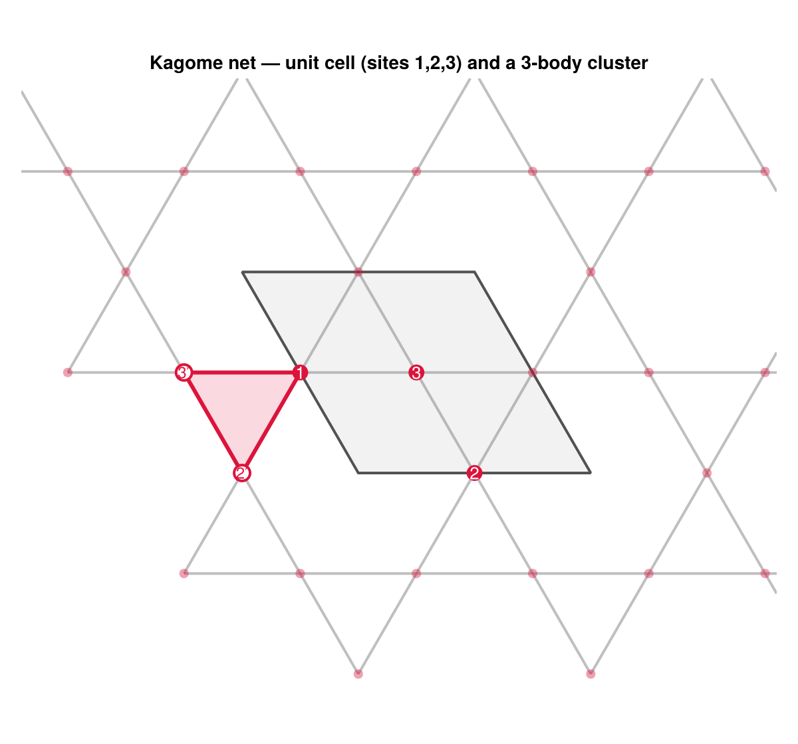

Kagome three-body
Beyond pairs, the new physics is that a space-group operation can permute the sites of a cluster. On the kagome lattice the three sites of a triangle are symmetry-equivalent ($C_{3v}$ permutes them), so a 3-body term with unequal site angular momenta — e.g. $l = (1,1,2)$ — must combine the three $l$-orderings into a single multi-term SALC. This tutorial builds the arbitrary-body-order basis, exhibits that multi-term channel, and recovers a synthetic 3-body model from energies and torques.
The kagome basis
using SLCE
import Spglib
using LinearAlgebra, Random
rng = MersenneTwister(2026)
randcfg(nat) = reduce(hcat, (v = randn(rng, 3); v / norm(v)) for _ = 1:nat)
a, c = 2.0, 8.0
lat = Lattice([a -a/2 0.0; 0.0 a*sqrt(3)/2 0.0; 0.0 0.0 c])
frac = [0.0 0.5 0.5; 0.5 0.0 0.5; 0.0 0.0 0.0]
kagome = Crystal(lat, frac, [1, 1, 1], ["Fe"])
interaction = BasisSpec(; nbody = 3, cutoff = 1.2, lmax = [2]) # up to 3-body, l ≤ 2
basis = SLCEBasis(kagome, interaction; backend = SpglibBackend())
(space_group = basis.spacegroup.symbol, n_salc = n_salcs(basis))(space_group = "P6/mmm", n_salc = 42)The lattice and its unit cell
The unit (calculation) cell carries three sites — labeled $1, 2, 3$ — and replicated over a few cells they form the kagome net of corner-sharing triangles. The shaded parallelogram is the cell; the shaded triangle is the actual 3-body cluster the basis enumerated, read back from build_clusters (its sites and their periodic shifts) rather than drawn by hand, so the picture matches the computed cluster exactly.
using CairoMakie
CairoMakie.activate!(type = "png")
A = lat.vectors # columns a₁, a₂, a₃
base = cartesian_positions(kagome) # 3 × 3, the unit-cell sites
NN = a / 2 # nearest-neighbor distance
# Replicate the unit cell over a small patch so the kagome net is visible.
pts = Point2f[]
for n1 in -1:2, n2 in -1:2, b in 1:3
r = A[:, 1] * n1 + A[:, 2] * n2 + base[:, b]
push!(pts, Point2f(r[1], r[2]))
end
# The representative 3-body cluster: home atoms + their periodic lattice shifts.
# (These construction internals are public but unexported — call them qualified.)
sg = SLCE.analyze_symmetry(SpglibBackend(), kagome)
nl = SLCE.build_neighbor_list(kagome, SLCE._superset_cutoff(interaction), MinimumImage())
clus = SLCE.build_clusters(kagome, nl, sg; nbody = 3).by_body[3][1].representative
corners = [Point2f((A * Float64.(clus.shifts[k]) + base[:, clus.atoms[k]])[1:2]...)
for k in 1:3]
# The unit (calculation) cell parallelogram: O, a₁, a₁ + a₂, a₂.
v1, v2 = Point2f(A[1, 1], A[2, 1]), Point2f(A[1, 2], A[2, 2])
cellpoly = [Point2f(0, 0), v1, v1 + v2, v2]
fig = Figure(size = (600, 560))
ax = Axis(fig[1, 1]; aspect = DataAspect(),
title = "Kagome net — unit cell (sites 1,2,3) and a 3-body cluster")
hidedecorations!(ax); hidespines!(ax)
for i in eachindex(pts), j in (i + 1):length(pts) # nearest-neighbor edges
abs(norm(pts[i] - pts[j]) - NN) < 1e-6 &&
lines!(ax, [pts[i], pts[j]]; color = (:gray, 0.5), linewidth = 2)
end
poly!(ax, cellpoly; color = (:gray, 0.10), strokecolor = (:gray25, 0.9), strokewidth = 2)
poly!(ax, corners; color = (:crimson, 0.16), strokecolor = :crimson, strokewidth = 3)
scatter!(ax, pts; markersize = 10, color = (:crimson, 0.4))
for b in 1:3 # the three home-cell sites
p = Point2f(base[1, b], base[2, b])
scatter!(ax, [p]; markersize = 17, color = :crimson)
text!(ax, p; text = string(b), align = (:center, :center), color = :white, fontsize = 13)
end
for k in 1:3 # sites the cluster borrows as images
all(==(0), clus.shifts[k]) && continue
scatter!(ax, [corners[k]]; markersize = 17, color = :white,
strokecolor = :crimson, strokewidth = 2)
text!(ax, corners[k]; text = "$(clus.atoms[k])′", align = (:center, :center),
color = :crimson, fontsize = 12)
end
xlims!(ax, -2.9, 3.6); ylims!(ax, -1.9, 3.4)
fig
Every site has the same environment, and a triangle's three sites are related by $C_{3v}$. The highlighted 3-body cluster straddles the cell boundary: it keeps site $1$ from this cell and borrows $2'$ and $3'$ as periodic images from the neighbouring cell — just as the chain's $1\text{–}4$ bond reaches across the boundary. Because a space-group operation permutes the triangle's sites, an $l = (1,1,2)$ term must combine the three $l$-orderings into one multi-term SALC.
A multi-term SALC
The $l = (1,1,2)$, $L_f = 0$ three-body channel combines the distinct $l$-orderings into one SALC, stored as several terms per member:
s112 = first(s for s in SLCE.salcs(basis)
if s.key.body == 3 && SLCE.spin_ls(s.key) == [1, 1, 2] && s.Lf == 0)
length(s112.members[1].terms) # number of l-orderings folded into this one SALC3A single-l or equal-l channel collapses to one term and matches the ordinary pairwise construction; the multi-term machinery only switches on when permutation-equivalent sites carry unequal l. The mechanism is described in Architecture.
Recover a synthetic 3-body model
We draw random "true" couplings, generate in-span energies and the corresponding torques, and recover the couplings with an energy + torque co-fit.
m = n_salcs(basis)
configs = [randcfg(3) for _ = 1:200]
skel = SLCEDataset(basis, configs, zeros(length(configs))) # for its design matrix
J_true = randn(rng, m)
j0_true = 0.5
energies = j0_true .+ skel.X_E * J_true
model0 = SLCEModel(basis, j0_true, J_true) # a synthetic model from hand-set couplings
torques = [predict_torque(model0, c) for c in configs]
f = fit(SLCEFit, SLCEDataset(basis, configs, energies, torques), OLS(); torque_weight = 0.3)
(r2_energy = round(r2_energy(f); digits = 12),
r2_torque = round(r2_torque(f); digits = 12),
max_dJ = round(maximum(abs, coef(f) .- J_true); sigdigits = 3))(r2_energy = 1.0, r2_torque = 1.0, max_dJ = 3.39e-15)Both observables are reproduced and every one of the $m$ couplings — across all body orders, l-channels, and Lf — is recovered to numerical precision. The multi-term channel is fit on exactly the same footing as the bilinear ones, because evaluate_salc and the torque-gradient kernel both loop over a SALC's terms.
Notes
- The same
nbody = Kconstruction works for anyK; the cost grows withKandlmax. - For a real fit you would supply DFT energies and torques (see Persistence and I/O) rather than synthetic in-span data, and likely a regularized estimator (see Data and fitting).